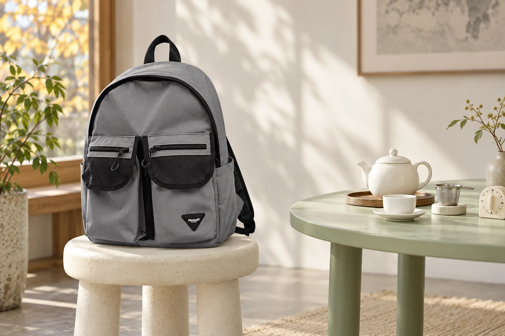

의자에 놓은 백팩, 다시 메는 쪽을 먼저 정하기

백팩을 의자 위에 잠깐 놓고 앉았다가 다시 일어납니다. 몸체는 곁에 있는데 어깨끈 하나가 등받이 뒤로 넘어가 있거나 의자 사이에 들어가 있을 수 있습니다. 다음 동작은 가방을 드는 일이 아니라 남은 끈을 찾는 일부터 시작됩니다. 가방을 놓는 순간에 어느 쪽에서 다시 들지 정해보면 짧은 보관에서도 방향을 고를 이유가 생깁니다. 몸체가 놓이는 면과 끈이 머무는 자리를 함께 보는 것입니다.
의자에 놓아도 되는지는 공간의 안내와 현재 사용 상황을 따릅니다. 허용된 자기 자리에서 가방 전체를 받칠 수 있는 면을 찾았다면 그다음은 가방의 방향입니다. 같은 좌판도 백팩의 정면을 바깥으로 둘 때와 등 쪽을 바깥으로 둘 때 손이 가는 위치가 달라집니다. 잠깐 두는 동안 물건을 꺼낼지, 자리를 떠날 때까지 닫아둘지에 따라 필요한 방향도 다릅니다.

Himawari No.1230의 실제 제품 사진에서는 몸체 위쪽 손잡이와 어깨에 놓인 끈, 앞쪽의 검정 선과 작은 장식이 보입니다. 안내된 외부 크기는 가로 32 × 세로 40 × 폭 18cm입니다. 이 외부 규모는 좌판에 가방을 둘 자리를 가늠하는 자료이며 어떤 의자에서 안정적으로 놓이는지를 보장하는 값은 아닙니다. 실제 짐을 넣은 몸체와 의자 면을 함께 봅니다.
가방을 다시 멜 쪽에 손잡이가 가까우면 몸체를 잡아 옮길 위치가 분명해질 수 있습니다. 어깨끈이 같은 방향으로 모여 있으면 메기 전에 정리할 곳도 눈에 들어옵니다. 다만 손잡이처럼 보이는 부품의 사용 범위는 해당 제품의 안내를 따릅니다. 지퍼 장식이나 개인 고리를 가방 전체를 드는 부위로 쓰지 않고, 원래 잡을 수 있는 곳과 밖에 더한 소품을 구별합니다.
등에 닿는 면이 위를 향하는 방향과 옆을 향하는 방향도 비교할 수 있습니다. 가방을 놓은 상태에서 다음에 사용할 어깨끈이 어디에 남는지 봅니다. 몸체가 일부만 의자에 걸치거나 한쪽으로 기울어 있다면 먼저 받칠 자리를 바꿉니다. 몸체가 놓인 면을 유지하면서 끈을 어느 쪽으로 정리할지 고릅니다. 전체를 받칠 면이 정해진 뒤 그 안에서 다시 들 방향을 고릅니다.
끈이 의자 뒤로 넘어가는 순간
백팩을 급하게 내려놓으면 긴 끈은 몸체와 다른 방향으로 떨어질 수 있습니다. 등받이의 틈이나 좌판 아래로 이어졌는지 눈으로 봅니다. 본체만 제자리에 놓았다고 생각하면 나중에 들어 올릴 때 끈이 어디에 걸렸는지 찾게 됩니다. 가방을 놓는 손을 떼기 전에 긴 부분이 어느 쪽에 있는지 한 번 볼 수 있습니다. 묶거나 새로 고정하지 않아도 본체 가까이 정리할 자리가 있을 수 있습니다.
의자가 움직이는 방식도 끈 방향에 영향을 줍니다. 좌판에 놓인 가방은 그대로여도 옆 의자를 빼거나 등받이를 조정하며 끈이 부품 사이로 들어갈 수 있습니다. 사람의 움직임이 많은 자리라면 남는 끈이 통로로 나가지 않도록 위치를 고릅니다. 의자에 가방을 두는 선택은 가방 하나의 폭을 맞추는 것으로 끝나지 않습니다. 그 곁에서 어떤 물건과 사람이 움직일지도 같은 배치 안에 있습니다.
가방을 잡았는데 자연스럽게 따라오지 않으면 더 힘주어 들기 전에 끈의 경로를 확인합니다. 가방이 무거워진 것인지, 다른 물건 아래에 끈이 남았는지 눈으로 구별할 수 있습니다. 몸체를 받친 상태에서 걸린 부분을 볼 수 있도록 두고 정리합니다. 의자째 움직이거나 다른 사람의 물건을 끌어당기는 상황을 피하려면 본체를 들기 전 끈을 확인하는 편이 순서가 단순합니다.
여는 방향과 메는 방향이 다를 때
가방을 놓은 채 앞주머니를 여러 번 열 계획이라면 정면이 손에 가까운 쪽을 택할 수 있습니다. 반대로 자리를 떠날 때까지 닫아둘 예정이라면 다시 멜 어깨끈의 위치가 더 중요할 수 있습니다. 다음에 어떤 동작을 먼저 할지에 따라 내려놓을 방향을 고르면 됩니다. 같은 백팩도 도착해서 일하는 시간과 잠깐 쉬는 시간에 놓는 방향이 달라질 수 있습니다.
필요한 소지품을 꺼내려고 몸체를 돌렸다면 어깨끈의 위치도 함께 바뀝니다. 쓰던 물건을 다시 넣은 뒤 처음 방향으로 되돌릴지 현재 위치로 들지 정할 수 있습니다. 옆의 작은 물건을 정리하느라 끈을 의자 뒤로 넘겨놓았다면 그 부분을 회수합니다. 가방 안의 여밈을 닫는 일과 바깥 끈을 정리하는 일을 이어두면 출발 직전에 가방을 다시 내려놓을 일이 줄어들 수 있습니다.
의자 위에 잠깐 벗은 외투가 함께 있다면 가방 끈과 다른 물건의 긴 부분을 구별합니다. 소매나 옷의 허리끈이 어깨끈과 섞이면 어느 물건을 먼저 들지 달라집니다. 각 물건을 둘 면이 부족하다면 허용된 다른 보관 위치를 고릅니다. 백팩 하나를 놓을 만한 좌판이 있다고 외투와 소지품까지 같은 방식으로 올릴 수 있는 것은 아닙니다. 짐을 놓을 면과 다시 챙길 순서를 함께 정합니다.
자리를 떠날 때에는 가방을 몸 가까이 가져온 뒤 평소 사용하는 방식으로 멥니다. 한쪽 끈이 접혔거나 길게 남은 부분이 의자에 이어져 있지는 않은지 보면서 동작을 마칩니다. 오늘 어느 방향이 편했는지 기억해두면 비슷한 자리에서 다시 쓸 기준이 생깁니다. 다른 의자에서는 좌판의 폭과 등받이 형태가 달라지므로 그 기준을 그대로 적용하기보다 실제 놓일 면을 다시 봅니다.
No.1230을 잠깐 내려놓는 장면에서 필요한 것은 새로운 가방 거치법보다 돌아올 동작을 예상하는 일입니다. 손잡이를 잡을 쪽, 어깨끈을 올릴 쪽, 물건을 꺼낼 쪽이 어떻게 이어지는지 봅니다. 몸체와 끈이 모두 자기 자리 안에 있고 다시 들 때 주변을 함께 움직이지 않는 방향이면 됩니다. 앉는 순간 가방을 놓았다가 일어설 때 곧바로 멜 수 있도록, 그 사이의 방향을 한 번 정해봅니다.